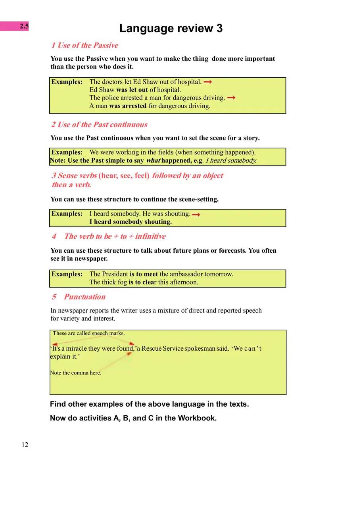

2.5 Language review 3
1 Use of the Passive You use the Passive when you want to make the thing done more important than the person who does it. Examples: The doctors let Ed Shaw out of hospital. → Ed Shaw was let out of hospital. The police arrested a man for dangerous driving. → A man was arrested for dangerous driving. 2 Use of the Past continuous You use the Past continuous when you want to set the scene for a story. Examples: We were working in the fields (when something happened). Note: Use the Past simple to say what happened, e.g. I heard somebody. 3 Sense verbs (hear, see, feel) followed by an object then a verb. You can use these structure to continue the scene-setting. Examples: I heard somebody. He was shouting. → I heard somebody shouting. 4 The verb to be + to + infinitive You can use these structure to talk about future plans or forecasts. You often see it in newspaper. Examples: The President is to meet the ambassador tomorrow. | The thick fog is to clear this afternoon.
these structure في البندين 3 و4 وin newspaper. بالإفراد في البند 4، كما وردت كلمة were خارج الفراغ في WB 2.5 A #4 (These apples (to buy) were ______ yesterday)؛ وحُفظت جميعاً حرفياً.5 Punctuation In newspaper reports the writer uses a mixture of direct and reported speech for variety and interest. These are called speech marks. 'It's a miracle they were found,' a Rescue Service spokesman said. 'We can't explain it.' Note the comma here. Find other examples of the above language in the texts. Now do activities A, B, and C in the Workbook.
[
{
"num": 1,
"prompt": "1 My cousin (to be) ______ to be married next month.",
"answers": [
"is"
]
},
{
"num": 2,
"prompt": "2 When I (to wake up) ______ yesterday, my mother (to work) ______ in the kitchen and my little brother (to play) ______ outside.",
"answers": [
"woke up",
"was working",
"was playing"
]
},
{
"num": 3,
"prompt": "3 When we saw our father's new car (to come) ______ along the road, we all (to run) ______ to meet him.",
"answers": [
"coming",
"ran"
]
},
{
"num": 4,
"prompt": "4 These apples (to buy) were ______ yesterday, so they should be fresh.",
"answers": [
"bought"
]
},
{
"num": 5,
"prompt": "5 At the wedding, the men (to dance) ______ outside, when it (to start) ______ to rain.",
"answers": [
"were dancing",
"started"
]
},
{
"num": 6,
"prompt": "6 (WB p. 18) A new road (to build) ______ to the village soon and then it will be easier to get to town.",
"answers": [
"is to be built"
]
},
{
"num": 7,
"prompt": "7 (WB p. 18) Quick! Go and check in the kitchen! I can smell something (to burn) ______.",
"answers": [
"burning"
]
},
{
"num": 8,
"prompt": "8 (WB p. 18) The new hospital (to open) ______ by the Prime Minister last week.",
"answers": [
"was opened"
]
}
][
{
"num": 1,
"question": "I heard somebody shouting don said then I saw two men running towards us",
"model_answer": "'I heard somebody shouting,' Don said. 'Then I saw two men running towards us.'",
"explain_ar": "وضع علامتي التنصيص، فاصلة بعد shouting داخل التنصيص قبل Don said، نقطة بعد said، وتكبير حرف D وT."
},
{
"num": 2,
"question": "who were they Jim asked and what were they doing",
"model_answer": "'Who were they?' Jim asked. 'And what were they doing?' (or: 'Who were they,' Jim asked, 'and what were they doing?')",
"explain_ar": "تكبير Who، وضع علامة الاستفهام داخل التنصيص الأول، وختم الجملة الثانية بعلامة استفهام داخل التنصيص."
}
][
{
"num": 1,
"question": "Victim of Road Accident Dies",
"model_answer": "A victim of a road accident has died (or died).",
"explain_ar": "إعادة أداة التنكير a وتحويل المضارع الإخباري Dies إلى الماضي التام/البسيط."
},
{
"num": 2,
"question": "220 Dead in Air Crash: No Survivors",
"model_answer": "There are 220 people dead in an air crash and there are no survivors.",
"explain_ar": "إعادة there are/were وكلمة people والأداة an."
},
{
"num": 3,
"question": "Thick Fog to Clear by Afternoon, Then Sun",
"model_answer": "The thick fog is to clear by the afternoon, and then it will be sunny / there will be sun.",
"explain_ar": "تطبيق قاعدة to be + to + infinitive (is to clear) من بند 4 في PB ص 12."
},
{
"num": 4,
"question": "New Cars Sign of Wealth",
"model_answer": "New cars are a sign of wealth.",
"explain_ar": "إعادة فعل الكينونة للجمع (are) وأداة التنكير (a)."
}
]{
"pb_text_vs_image": "طُوبقت البنود 1–5 في PB ص 12 مع صورة pb-14.png: حُفظت الصيغ المطبوعة ('these structure'، 'in newspaper.') حرفياً، وصُحّحت فواصل السهم التوضيحي لبند Punctuation.",
"wb_ocr_vs_image": "قُورنت صفحتا WB ص 17–18 مع tesseract.js eng: صُحّح ما قرأته OCR خطأً في B #1 ('I'heard', '| saw') بصرياً من wb-019.png؛ كما رُصد وجود 'were' مطبوعة خارج الفراغ في A #4 من wb-018.png."
}